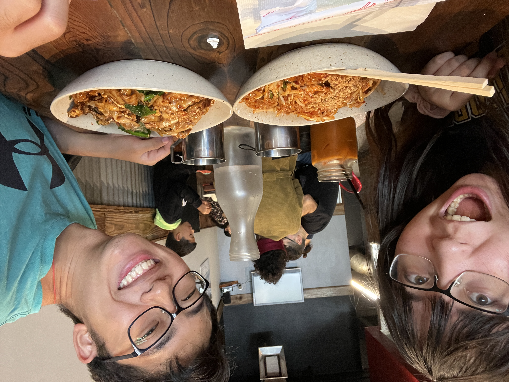

Best restaurants in Berkeley!
Blog post by Alyssa Smith
Berkeley has a plethora of banging food options. Here are some of the best restaurants and cheap eats around Berkeley for each neighborhood!
Southside
- Bongo Burger
- The love of my life
- Bomb. Their fries are like fried to perfection.
- Three locations in each of the neighborhoods!!!
- Cheese n' Stuff
- The chicken pesto foccacia is so good.
- Right across from Sodoi!!! And super close to Plentea!!!
- Fratty vibes if that's a plus for you.

- Sweetheart Cafe
- i'm not gonna lie,,,, sweetheart is MAD sus but i will still go no matter what
- i'm pretty sure their oil is days-old but it still hits
- i gotta funny story with that one dude who is always willing to fight with customers: i was asking for a plastic bag but the name escaped me so i said "erm could I have a bag with handles" and the dude SCOFFED (the nerve) and was like "sorry i don't know what a bag with handles is" and i was like "OH sorry i meant a plastic bag" and he said "there we go..... why is everyone so afraid to say plastic bag god i hate these PC berkeley students" and i was like "??????? sir i just wanted a plastic bag????? there was nothing PC about that???????" anyway i kinda avoid sweetheart now whenever that dude's working but i still eat their popcorn chicken like mad.
Downtown
- Marugame Udon
- Imma be straight up I actually think Marugame is hella mid but I just take people to it if they're visiting Berkeley.
- This is actually just my plug for Berkeley Way West -- best study spot in Berk.
- I love Berkeley Way West.
- Imm Thai
- BEST THAI FOOD IN BERKELEY
- Pad thai, pad kee mao, pad see ew are great (i've only tried the noodles)
- Long lines sometimes
- 
- Ti-Bear
- Cute drinks!!!!!!!!!!!!!!!!
- There's a literal claw machine in there (cool)
- The mochi milk makes for great jokes (if you go you'll see what i mean)
-
Northside
- La Val's
- Great atmosphere and pizza :thumbsup:
- Like Mod/Blaze but greasier (this is a plus in my book)
- I used to go so often the owners know me (not completely sure this is a plus)

- La Crepe a Moi
- Lowk expensive, but crepes are very good.

- Chesse Board Pizza
- I've never gone but I heard it's good :D